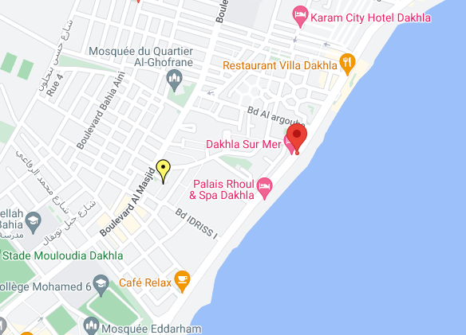

Système d'Inspection du travail
L’ Inspection de travail veuillent sur l’application du code du travail au sein des établissements et les entreprises du secteur privé.
Les Inspecteurs de travail fonts des visites de contrôle pour toutes les sociétés et les entreprises
pour s’assurer de conformité au règlement du code de travail et fonts des rapports de visite dont ils laisseront une copie pour l’employeur, et en cas d’infraction ils rédigent des procès verbaux qui seront transmis au tribunal.
1 - Les catégories professionnelles de l 'inspection du travail :
L'inspection du travail comprend les catégories professionnelles ci-après :- Les inspecteurs du travail dans les secteurs d'industrie, du commerce et des services.
- Les inspecteurs des lois sociales en agriculture.
- Les médecins et ingénieurs chargés de l'inspection du travail (chacun dans la limite de sa spécialité).
2 - Missions, attributions et pouvoirs des agents de l 'inspection dutravail :
Les agents de l'inspection du travail sont chargés :- d'assurer le contrôle de l'application des dispositions législatives et réglementaires relatives au travail.
- de fournir des informations et des conseils techniques aux employeurs et aux salariés sur les moyens les plus efficaces en conformité avec les dispositions légales.
- pénétrer librement dans les établissements assujettis à son contrôle.
3 - Organisation et structure de l 'inspection du travail :
L'inspection du travail s 'inscrit dans la structure administrative des services déconcentrés du ministère de l’nclusion économique de le petite entreprise de l’Emploi et des compétences . C'est le ministère chargé du travail qui a l 'autorité centrale chargée de la surveillance du contrôle de l'inspection du travail.Par ailleurs, le Ministère dispose des services centraux et des services extérieurs composés de Directions de l'Emploi qui sont, actuellement, au nombre de 51 Directions comprenant 100 circonscriptions du travail dans les secteurs industriel, commercial et des services et 45 circonscriptions des lois sociales en agriculture.
Service secrétariat
Le secrétariat :
Elle s’occupe de tout les travaux de la rédaction des correspondances émises par tout les services de cette délégation et répondre a tout les appelles téléphoniques ainsi le classement du courrier par un ordre spécial.Et aussi elle rédige tous les travaux mensuels sous forme des tableaux statistiques qui sont joint à ce rapport.
Le bureau d’ordre :
Son rôle et d’organiser la transmission du courrier et son enregistrement dans des registres administratifs spécifiques pour cette tâche : un registre pour l’arrivée et un autre pour le départ.Le bureau des affaires du personnelle :
Ce bureau et chargé pour gérer toutes les affaires des ressources humaines relevant de cette délégation : tout ce qui concerne leur situation familial comme les allocations des enfants si le fonctionnaire est marié.Et poursuit toutes les étapes administrative comme leur changement de poste ou de grade, leur présence leur congés et leur compétence et aptitude professionnelle.
Guichet Taechir :
La présente procedure définit le processus d’instruction d’une demande d’autorisation de travail formuleé par un employeur, personne morale ou physique pour le recrutement d’un salarié étranger au maroc conformément qux dispositions juridique en vigueurcontact
Responsable :
Mr Sannima Zine eddineTéléphone :
0528897765Fax :
0528897765Email :
dre.dakhla@emploi.gov.maAdresse :
Siège de la DPTIP de Dakhla Oued Eddahab Avenue Mohammed V, N°16 Hay El Massira 1, Dakhla